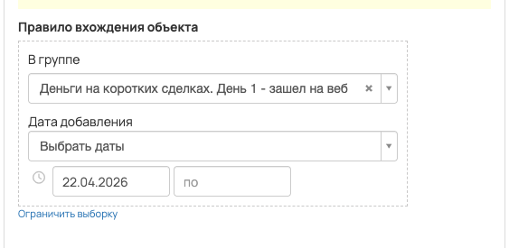
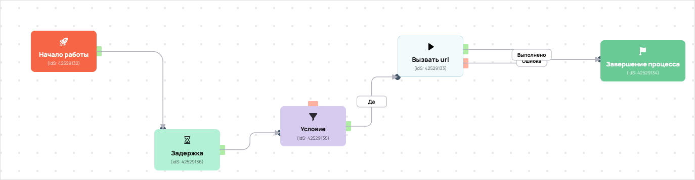

[AMO] [ED] чекин_запуск_РТ6 повтор день 1 99604
- ID процесса:
2445622 - Объект: Пользователи
- Статус: Ожидание событий
- Внутренняя страница: 2445622. [AMO] [ED] чекин_запуск_РТ6 повтор день 1 99604
- GetCourse: Карточка | Схема процесса
Скриншоты процесса


Коротко для заказчика
- Главное: В процесс попадают пользователи по правилу: Дата добавления в группу.
- Дальше он передает данные как: Формы и анкеты.
- Связанных баз Vakas: 1.
Понятное описание процесса
- Процесс работает с объектом GetCourse: Пользователи. Текущий статус процесса: Ожидание событий.
- На вход попадают данные так: В процесс попадают пользователи по правилу: Дата добавления в группу.
- Внутри схемы есть дополнительные проверки/ожидания: 1. Основные блоки: «Условие».
- Дальше процесс делает прямые вызовы Vakas: 1. Напрямую задействованы базы: 99604.
- Передача: 99604. База 99604: Формы и анкеты. Передаются параметры:
name,email,phone,getcourse_user_id,utm_source,utm_medium,utm_campaign,utm_content,utm_term,comments. - Что происходит в amoCRM: На входе в этап ОТДЕЛ - ДОВЕДЕНИЯ -> ПОСМОТРЕЛИ ВЕБИНАР 1 [57387586] база ищет дубль и при необходимости переводит найденную сделку в рабочий этап.
Ход процесса в GetCourse
- Схема состоит из 7 блоков и 9 переходов.
- По типам: стартов 1, условий/ожиданий 1, вызовов URL 3, изменений полей 0, финалов 1.
Блоки процесса: что делают и зачем нужны:
- Блок
42529132«Начало работы» (старт). Что делает: Запускает выполнение схемы для объекта, который попал под правило входа процесса. Зачем нужен: Нужен как точка входа: от него GetCourse начинает движение объекта по схеме. Дальше: если результат «Выполнено», идет в «Задержка». - Блок
42529136«Задержка» (таймер). Что делает: Делает паузу или ждет заданное время перед следующим шагом. Зачем нужен: Нужен для задержки между проверкой и передачей, чтобы данные успели появиться или чтобы соблюсти нужный порядок обработки. Дальше: если результат «Выполнено», идет в «Условие». - Блок
42529135«Условие» (условие). Что делает: Проверяет условие: Участник вебинара. Зачем нужен: Нужен, чтобы разделить поток: подходящих пользователей/заказы отправить дальше, неподходящих перевести на другую ветку или завершить. Дальше: если результат «Да», идет в «Вызвать url». - Блок
42529133«Вызвать url» (вызов URL). Что делает: Передает в Vakas: 99604. База 99604, канал «Формы и анкеты» (POST); параметры:name,email,phone,getcourse_user_id,utm_source,utm_medium,utm_campaign,utm_content,utm_term,comments; timeout 300 сек. Зачем нужен: Нужен, чтобы передать подходящий объект в 99604. База 99604; дальше На входе в этап ОТДЕЛ - ДОВЕДЕНИЯ -> ПОСМОТРЕЛИ ВЕБИНАР 1 [57387586] база ищет дубль и при необходимости переводит найденную сделку в рабочий этап. Дальше: если результат «Ошибка», идет в «n8n fail после Вызвать url #42529133»; если результат «Выполнено», идет в «n8n success после Вызвать url #42529133». - Блок
43528077«n8n success после Вызвать url #42529133» (вызов URL). Что делает: Пишет событие в n8n: success, action vakas_users (POST); параметры:event,clientED,gcDomain,action,process_id,process_name,entity_type,object_id,user_id,name,email,phone,error_message; timeout 10 сек. Зачем нужен: Нужен для фиксации успешной отправки: n8n получает событие, что Vakas-вызов отработал без ошибки. Дальше: если результат «Ошибка», идет в «Завершение процесса»; если результат «Выполнено», идет в «Завершение процесса». - Блок
42529134«Завершение процесса» (завершение). Что делает: Завершает ветку процесса после выполненных проверок и действий. Зачем нужен: Нужен, чтобы закрыть текущую ветку и не гонять объект по процессу повторно. Дальше переходов нет: это конечная точка ветки. - Блок
43528084«n8n fail после Вызвать url #42529133» (вызов URL). Что делает: Пишет событие в n8n: fail, action vakas_users (POST); параметры:event,clientED,gcDomain,action,process_id,process_name,entity_type,object_id,user_id,name,email,phone,error_message; timeout 10 сек. Зачем нужен: Нужен для контроля ошибки: n8n получает данные неуспешной отправки, чтобы можно было увидеть проблему и повторить/разобрать передачу. Дальше: если результат «Ошибка», идет в «Условие»; если результат «Выполнено», идет в «Условие».
Что именно входит в процесс
- В процесс попадают пользователи по правилу: Дата добавления в группу.
Как именно настроено правило
- В amoCRM процесс ориентирован на воронки: «Отдел Доведения, Этап Посмотрели вебинар 1».
- Название сделки в amo: «чекин_запуск_РТ6».
- Тег сделки в amo: «чекин_запуск_РТ6».
Куда и как передается дальше
| База Vakas | Что передается | Этап в amoCRM | Что происходит со сделкой |
|---|---|---|---|
| 99604. База 99604 | Формы и анкеты | ОТДЕЛ - ДОВЕДЕНИЯ -> ПОСМОТРЕЛИ ВЕБИНАР 1 [57387586] | На входе в этап ОТДЕЛ - ДОВЕДЕНИЯ -> ПОСМОТРЕЛИ ВЕБИНАР 1 [57387586] база ищет дубль и при необходимости переводит найденную сделку в рабочий этап. |